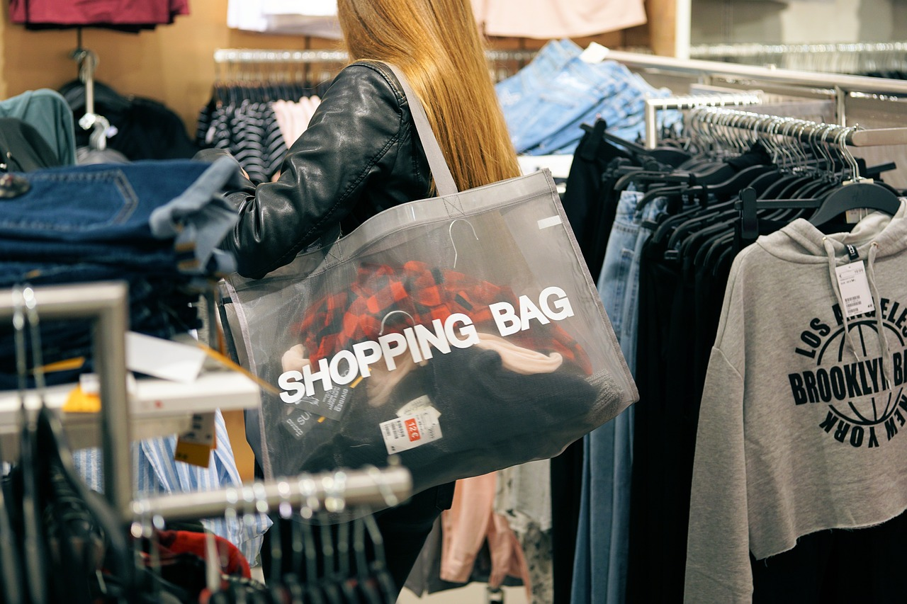

The biggest issue with the VSCO girl trend is consummerism. VSCO girls tend to overspend their money on items like Kanken backpacks, Hydro Flasks, scrunchies, shoes, and clothes from stores like Brandy Melvile. This overspending and overpurchasing actually increases the waste on our planet, including plastic waste which kills turtles and other marine creatures. Obviously this is ironic because we're supposed to "save the turtles". There are ways to fix, or at least improve this, however. A lot of the things you buy can homemade with recycled materials. If not, then consider buying pre-owned items from sites like ebay or purchase from eco-friendly brands. Additionally, if you truly want to contribute to the cause,volunteering and fundraising are great ways to help. Click the other articles to find out about more specific solutions.
